Philadelphia Masonic Temple
April 12, 2010 · Philadelphia, Pennsylvania
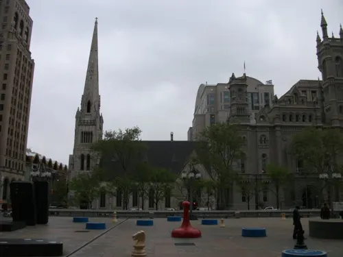
On April 12, 2010 I visited the Philadelphia Masonic Temple.
The album covers the Gothic exterior next to City Hall, panoramic lodge rooms, the Egyptian Hall, stained-glass corridors, and museum pieces including Dudley watches.


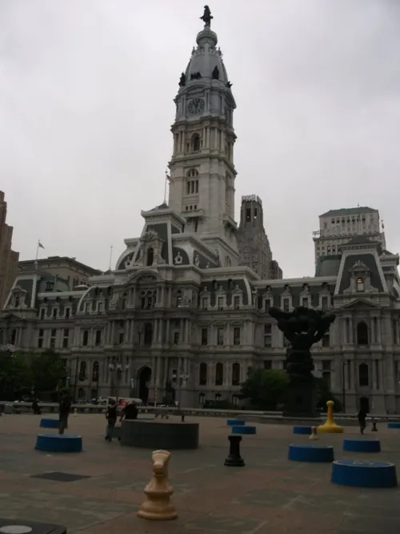

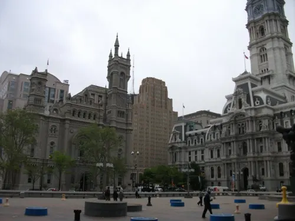

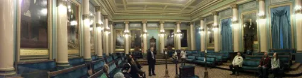

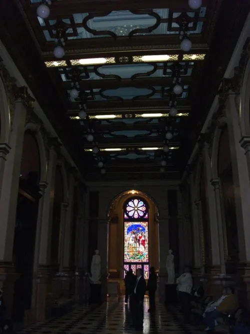

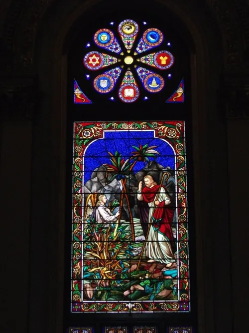

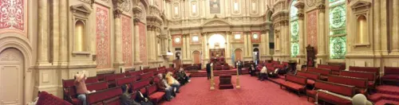

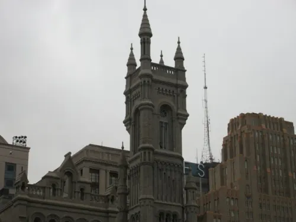

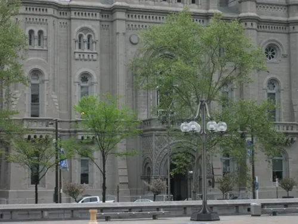

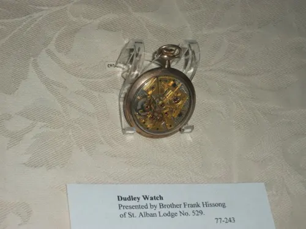

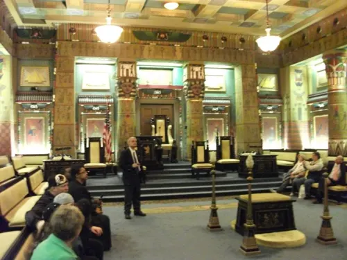

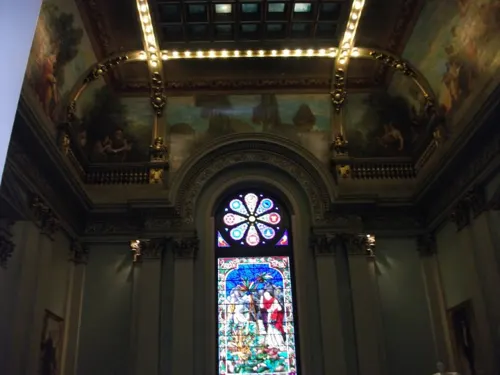

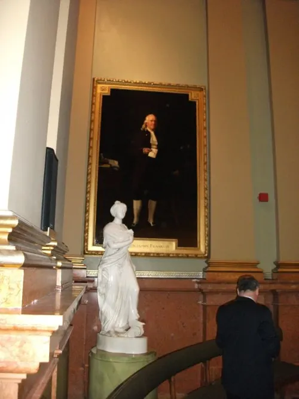

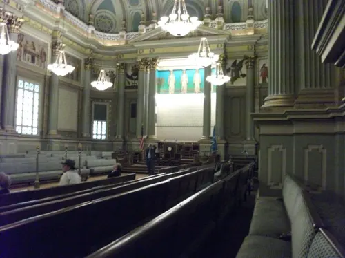